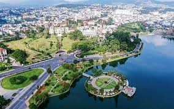

HELLO, IT'S NICE TO MEET YOU

Lâm Đồng thuộc khu vực Nam Tây Nguyên ở độ cao chênh lệch từ 300 - 1.500m so với mặt nước biển
Phía Nam và Đông Nam giáp tỉnh Bình Thuận, phía Đông giáp tỉnh Khánh Hòa - tỉnh Ninh Thuận, phía Bắc giáp tỉnh Đắk Lắk - Đắk Nông và phía Tây Nam giáp tỉnh Đồng Nai - tỉnh Bình Phước. Lâm Đồng còn nằm trong vùng kinh tế trọng điểm phía Nam -
là Khu vực năng động có tốc độ tăng trưởng kinh tế cao, đây là bước đệm để Lâm Đồng phát triển thế mạnh, khơi dậy tiềm năng mà không phải địa phương nào cũng có được
Vùng đất Lâm Đồng còn lưu giữ nhiều dấu tích văn hoá, lịch sử của các dân tộc. Trong nhiều năm qua, nhiều di tích lịch sử được quan tâm tiếp cận nghiên cứu, nổi tiếng nhất là khu di tích Cát Tiên. Trong lịch sử, Cát Tiên là đường biên giới của các nền văn hóa, một đường biên giới không biến động với những di tích cư trú của con người từ thời đại Đồng Thau cách đây gần 4000 năm, với những làng cổ rèn khuôn đúc đồng, dệt vải
, với đền tháp và mộ tháp uy nghiêm của một nền văn hóa đặc thù nằm trong dòng chảy của văn hóa Đồng Nai, văn hóa óc Eo, văn hóa Phù Nam.
Có nhiều món ăn tạo ra thương hiệu cho cả vùng đất, trong đó món bánh ướt lòng gà với biến tấu rất độc đáo nhưng hương vị thơm ngon. Chắc chắn, bạn thấy thích thú, tò mò khi mà bánh ướt nhưng lại không năn ăn với nem chả.
Đó chính là món ăn sự kết hợp rất độc đáo và ấn tượng giữa bánh dẻo mềm thơm, lòng gà rau răm, béo giòn, bắp chuối khiến bạn thích thú.
Chỉ cần một lần đặt chân đến mảnh đất Lâm Đồng, mọi du khách đều sẽ bị mê hoặc bởi thiên nhiên núi rừng hùng vĩ, con người thân thiện và nhiều món ăn hấp dẫn.
Và điều mà nhiều du khách cảm thấy tò mò nhất chắc hẳn là đặc sản Lâm Đồng phải không nào? Vậy vùng đất này có những món ăn nào có thể khiến du khách hấp dẫn đến như vậy!
Hãy để VN Foods giúp bạn hiểu hơn về văn hoá ẩm thực nơi đây nhé!